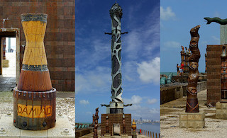
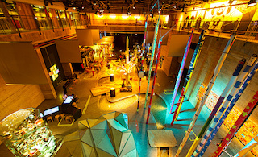
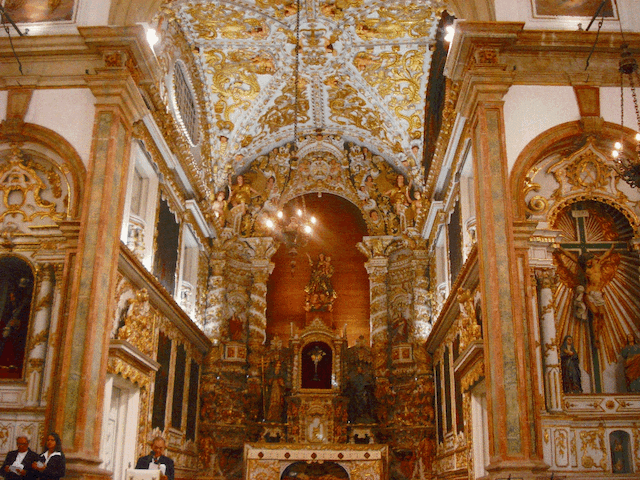

Guia de Destinos
Nesta seção você encontrará informações e dicas de lugares maravilhosos para planejar a sua viagem.
Lugares para se encantar
Seguindo o roteiro do Recife Antigo, trazemos, a seguir, os principais locais do seu entorno que o tornarão ainda mais atraente para a sua visita. Confira:
Parque das Esculturas Francisco Brennand
O Parque das Esculturas Francisco Brennand é um museu de arte a céu aberto localizado na cidade do Recife, capital do estado brasileiro de Pernambuco. Constitui um dos principais feitos do artista plástico pernambucano Francisco Brennand.

Museu Cais do Sertão
Um dos mais modernos elementos culturais do Brasil, o Cais do Sertão, instalado no antigo Armazém 10 do Porto do Recife, é um local de convivência, diversão e conhecimento, polo gerador de novas ideias e experiências. Abrigando e reverenciando a obra de Luiz Gonzaga, o grande homenageado do espaço, traz para a beira-mar da capital do estado um pouco do solo rico e generoso da cultura popular do sertão.

Igreja Madre de Deus
A Igreja Madre de Deus é um templo católico da cidade do Recife. Situa-se ao lado do prédio do antigo Convento dos Padres Oratorianos, primeiro convento da Ordem de São Filipe Néri no Brasil, ao qual era ligada através do extinto claustro.
